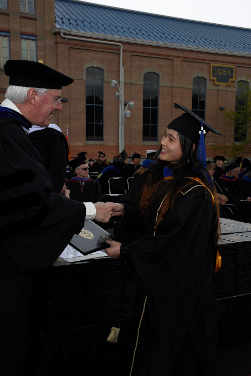

Tên tôi là Nguyễn Thị Thảo. Tôi tốt nghiệp Đại học Kinh Tế Quốc Dân vào năm 2012, khoảng hơn một năm sau đó, tôi theo học bằng Thạc sỹ Tài Chính và Quản Trị Rủi Ro tại University of Colorado Denver rồi đi làm. Tính đến thời điểm hiện tại, tôi đã có hơn 5 năm kinh nghiệm làm về kế toán, tài chính, và phân tích báo cáo tại 2 công ty và 1 tập đoàn điện lực của thành phố nơi tôi đang ở, Denver, Colorado Mỹ. Với sở thích làm việc với các con số từ nhỏ, nên tôi nghĩ lựa chọn theo nghề tài chính là một lựa chọn đúng đắn. Tôi rất yêu thích công việc của mình, nhưng từ lâu trong tôi cảm thấy trống vắng một điều gì đó. Với quan điểm sống của bản thân “it is dangerous for not staying educated”, tôi luôn cố gắng học thêm được điều gì đó mỗi ngày, để cuộc sống của tôi trôi qua không vô nghĩa. Do đó, bên cạnh công việc chính, tôi có mày mò tự học SQL và Python.
Sau khi tìm hiểu về các chương trình Bootcamp ở Mỹ, tôi thấy có nhiều bài báo về các tấm gương có thể thay đổi sự nghiệp sau khi học xong các khóa Bootcamp, và đó cũng trở thành nguồn cảm hứng cũng như động lực cho tôi. Tuy nhiên, các khóa học đó đòi hỏi người học phải đến nơi khóa học được tổ chức và giành toàn thời gian học trong khoảng 6 tháng hoặc hơn, chi phí ăn ở cũng phải tự chu cấp. Tôi là một người mẹ có con nhỏ, có công việc tốt với mức thu nhập khá ổn. Việc hy sinh tất cả để theo đuổi chương trình Bootcamp như thế cảm thấy không phải lựa chọn phù hợp với hoàn cảnh của bản thân mình. Nhưng bản thân tôi lại rất muốn tìm hiểu về công nghệ thông tin bởi vì nó là ngành phục vụ rất lớn cho công cuộc công nghiệp hóa, hiện đại hóa toàn thế giới, nó đóng vai trò quan trọng trong mọi lĩnh vực: xã hội, văn hóa, giáo dục, dịch vụ, v.v...Ngoài ra, thiên tài Steven Job từng nói: “mỗi con người nên biết ít nhất một ngôn ngữ lập trình bởi vì nó dạy cho bạn cách tư duy một cách logic”. Hơn nữa đối với tôi, thà đầu tư thời gian để thử tìm hiểu để rồi nếu có cảm thấy đây không phải là nghề giành cho mình, thì cũng chấp nhận, còn hơn là cứ mang trong mình một nỗi niềm trăn trở, tiếc nuối vì sao mình không thử.
Gọi là cái duyên hay cũng có thể là định mệnh, tôi đã tìm thấy cánh cửa mở ra con đường cho tôi tìm lời giải đáp, đó chính là Funix. Một chương trình học online đến từ một đất nước đang phát triển, nhưng lại có chất lượng quốc tế. Hơn nữa, vì thiết kể học online, nên tôi có thể thiết kế hoàn toàn thời gian học của mình. Sau khi liên lạc với nhà trường, tôi đã được nói chuyện với Hanah Phương Thảo, sự kiên nhẫn trả lời các câu “chất vấn” của tôi từ phía Hannah đã để lại ấn tượng ban đầu tốt về Funix. Sau khi nhập học, tôi được “chăm sóc” tận tình bởi Hannah Thanh Thúy, một người chị chu đáo và có trách nhiệm. Đôi khi, việc trả lời chậm những câu hỏi của tôi thôi, chị cũng xin lỗi. Tôi thấy thật quý sự chân tình cũng như chuyên nghiệp trong công việc của chị. Bên cạnh đó, tôi mới chỉ học hai môn là Công dân số và Xây dựng website đầu tiên đều rất thú vị và bổ ích. Giờ đây, tôi thấy khoảng trống trong mình đang được lấp dần bằng những kiến thức mới tôi học được mỗi ngày. Phía trước mắt sẽ còn nhiều chông gai và stress đang chờ đợi, nhưng cộng đồng Funix đã, đang, và sẽ giúp tôi không còn cảm thấy lẻ loi và giúp tôi giữ được ngọn lửa đam mê tiếp tục cháy để tôi có thể tiến bộ mỗi ngày!